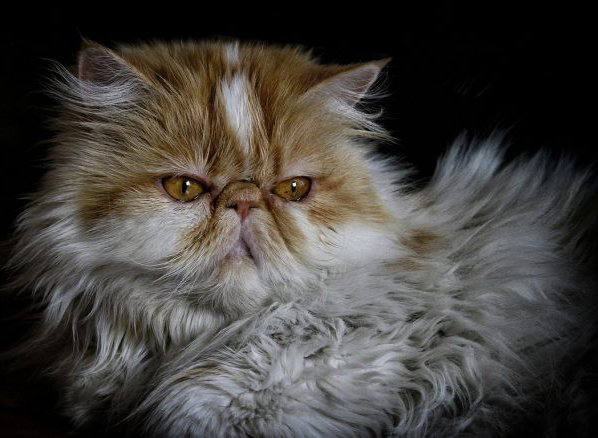

Persa é uma raça de gato doméstico originária do Irã, antiga Pérsia. É conhecido por sua aparência chamativa, de muita pelagem e focinho achatado. Os persas são gatos muito procurados por pessoas que vivem em espaços pequenos, como apartamentos, pois seus miados são baixos e pouco comuns, além do fato desses animais apresentarem um forte apego ao seu dono. Os gatos persas são meigos e carinhosos.
Esse animal se caracteriza pela pelagem comprida e sedosa, com uma cabeça grande e redonda, orelhas pequenas e arredondadas com tufos de pelo no interior, olhos grandes e redondos de coloração vívida e patas curtas, porém musculosas. O padrão comum da raça apresenta focinhos achatados (flat face), porém alguns animais possuem focinhos um pouco mais alongados (doll face).
A manutenção de sua pelagem é um muito trabalhosa, sobretudo devido a formação de nós ocorridos devido ao comprimento dos pelos.
O padrão de uma raça é determinado pelas associações que a representam. Assim sendo, existem pequenas variações de associação para associação. Abaixo podemos ver o padrão da FIFe (Federação Felina Internacional).
Tamanho: Médio a Grande - Os machos são maiores que as fêmeas, com 4 a 5k de massa e as femeas de 3 a 4kg.
Orelhas: Pequenas, arredondadas nas pontas e bem separadas.
Nariz: Achatado, Curto, Largo, com stop bem definido, situado entre os olhos e entre as pálpebras superiores e inferiores, nariz não arrebitado. As narinas devem ser bem abertas.
Corpo: De estrutura compacta, patas curtas, peito largo, ombros e dorso maciços, bem musculosos, de comprimento curto e formato quadrado.
Rabo: De comprimento curto, dobrado sobre o dorso fica entre a nuca (muito longo) e o meio das costas (ideal).
Pescoço: Curto e forte.
Cabeça: De formato redondo, maciça, bem equilibrada, crânio largo. Testa arredondada, bochechas cheias.
Pelagem: Comprida, densa , de textura fina e sedosa (sem ser lanosa).
Olhos: Grandes, redondos e simétricos, bem separados, dando a face uma expressão mais aberta. De cor sólida, brilhante.
Patas: Grandes, redondas, sendo desejável tufos de pelos entre os dedos.
Fonte: wikipedia.org
Voltar